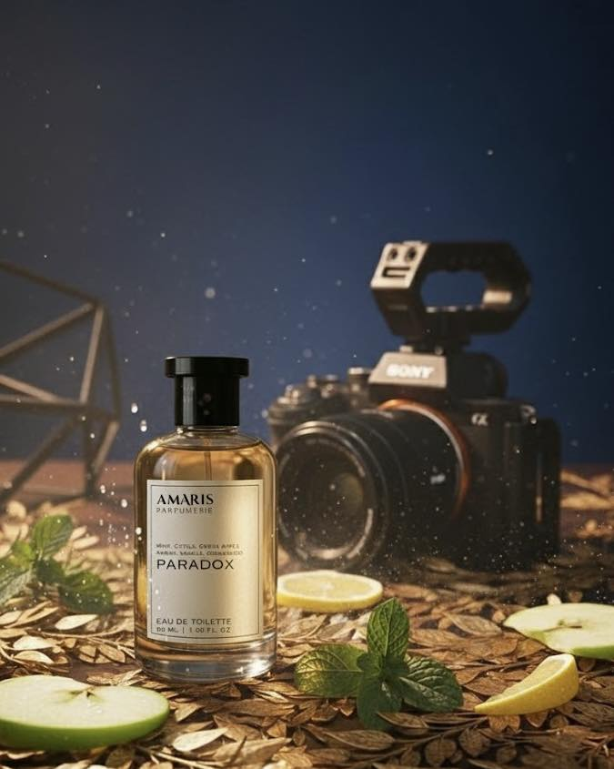

PARADOX is the scent of contradictions — a magnetic balance between fire and ice.
It opens with crisp mint and juicy green apple, sparking freshness that mirrors ambition and clarity. Beneath that cool confidence lies a pulse of tonka bean, amber, and vanilla — warm, addictive, and undeniably sensual. Notes of cedarwood and vetiver ground it in quiet strength, giving it the unmistakable aura of control and allure.
This is for the one who walks into the room and owns it without saying a word — bold but collected, passionate yet precise.
PARADOX doesn’t ask for attention. It commands it.
Citrus • Amber
₱ 350